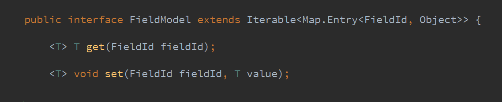
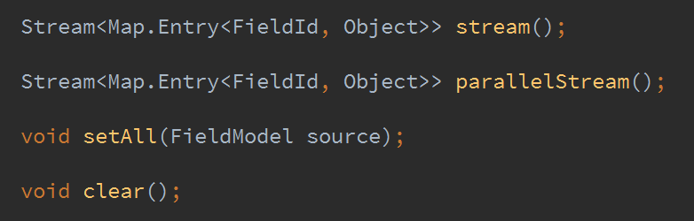
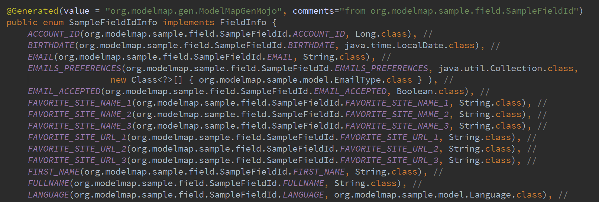

@gdigugli – Gilles Di Guglielmo
- Java Developer since 1999
- Software Architect at LesFurets.com
@jubaudry – Julien Baudry
- Java Developer since 2007
- Software Architect at LesFurets.com
LesFurets.com
- 22 Developers
- 2 Devops
- 3 Architect
LesFurets.com
- 1 website, 6 aggregators
- 400k line of code, 30k unit tests
- 150 selenium tests
- 10+ servers
- 1 codebase
What you have ...

Architecture Buzz
- Copy on write
- Immutable data
- noSQL
- Clustered Data Base
- CQRS
- Data streaming
- Micro batching
- Lambda architecture
- Data on demand
What you want …

You are in trouble ...

Front app evolutions
- Your domain model is cloned using two different language.
- Governance of the domain model and change request are difficult to implement.
- Development owners of the server and JavaScript application are different.
- UI Spaghetti code.
Front storage evolutions
- Mapping entities in Cassandra is painful.
- Don’t migrate your Entity/Relation model as it!
- You should probably flat your domain model to fit a single raw.
- Infinite storage.
BackOffice evolutions
- A lot of rework to implement.
- Spark and ML-lib love data vectors.
- Spark read raw data, aggregate, write them in micro batches.
- No more nightly batches.
- Full history is available for custom computations.
Code generator implementation
- Execution using a maven plugin
- Annotated properties are processed using Java Reflection
- Not implemented as a APT processor, due to some limitations

Execute the maven plugin

Generation output (1/3)
- The generated model implements the FieldModel interface.
- The 2 main methods are a getter and setter by FieldId.

Generation output (1/3)
... and with some additional methods.

Generation output (2/3)
An Enumeration containing field, type, generics type (optionnal)

Generation output (3/3)
a CVS containing each field, path, and value type

Domain Model as a Stream
- stream() return a stream of key/value pair (FieldId/Object)
- parallelStream() for parallel stream and better performance
- easy use a filter/map/reduce operations on a domain model
Model-Map available on Github
- http://github.com/lesfurets/model-map
- Framework and example